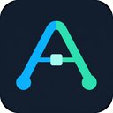

Markdown you control
Every captured conversation becomes a readable local file. Open it in Obsidian, another editor, or your own scripts.

Abe AI SyncLocal-first AI memory for Obsidian
Abe AI Sync saves supported chats from ChatGPT, Claude, Gemini, Grok, and Perplexity as linked Markdown in a folder you choose—then builds topic hubs and backlinks automatically.
Stop losing useful thinking
Important decisions, research, drafts, and reusable prompts disappear into separate AI histories. Abe AI Sync gives them one durable home: ordinary Markdown files that remain searchable, editable, and linkable in Obsidian.
How it works
Grant access through Chrome's folder picker. The extension can write only inside the folder you choose.
Save the open conversation, run a supported history backup, or enable background sync for open provider tabs.
A local Memory Home, topic hubs, categories, and backlinks turn isolated exports into a navigable second brain.
Built for ownership
Every captured conversation becomes a readable local file. Open it in Obsidian, another editor, or your own scripts.
See recent conversations, providers, and topic counts from one locally generated index.
Keyword-based categorization connects related notes with Obsidian-compatible wikilinks—without calling an external model.
Preserve titles, messages, timestamps, citations, and supported attachments or artifacts when a provider exposes them.
Choose the interval or leave it off. Recent activity and diagnostics make failed captures visible.
Conversation content is written to your selected folder, not uploaded to a publisher-operated chat-content service.
An honest boundary
Ordinary ChatGPT and Claude desktop conversations may be included after they appear in the same account's web history.
Temporary chats, incognito sessions, Codex or ChatGPT Work sessions, and Claude Code or Cowork sessions that never appear on the provider's website are not captured in version 1.
Founder's lifetime licence
The founder offer is limited to the first 100 customers. After that, the planned price is $49.
$29
one-time payment · USD
“Lifetime” means a perpetual licence to version 1, including all 1.x updates. Obsidian Sync and future major versions are not included.
FAQ
No. Abe AI Sync writes ordinary Markdown, so any compatible editor can open the files. Obsidian is recommended for the topic hubs, wikilinks, and backlink experience.
Inside the folder you select through Chrome. Conversation content is not sent to the developer's server. If you place the folder in a separate sync service, that service's own terms apply.
No. Coverage differs by provider. You can capture an open conversation, run full-history backup where supported, or enable background sync for open tabs. Temporary and desktop-only sessions may not be available.
No. Abe AI Sync is an independent product and is not endorsed by OpenAI, Anthropic, Google, xAI, or Perplexity.
Provider changes can temporarily affect capture. Version 1.x compatibility fixes are included, but no third-party integration can be guaranteed forever.
Contact support within 14 days of purchase. Approved refunds are processed through the payment provider and deactivate the associated licence.
Abe AI Sync